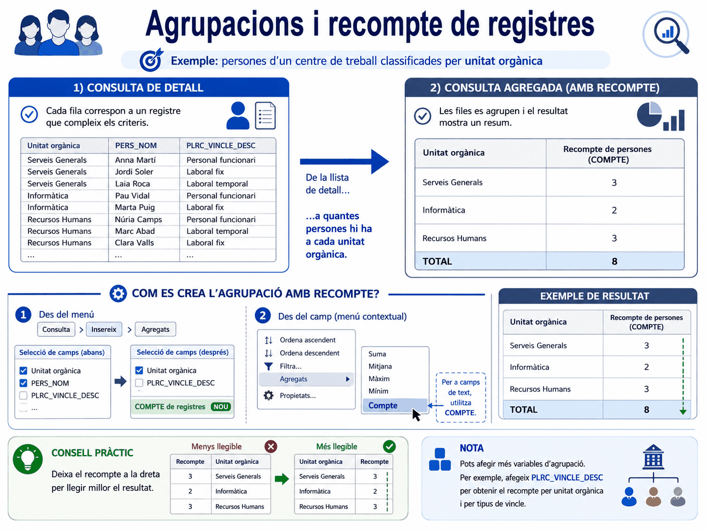
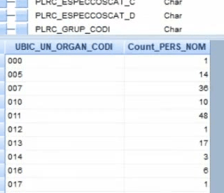
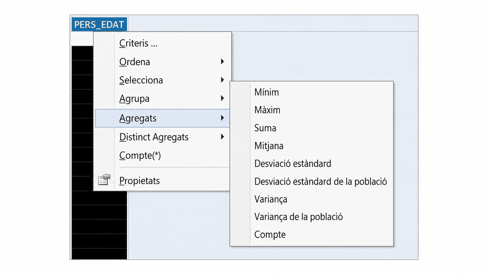
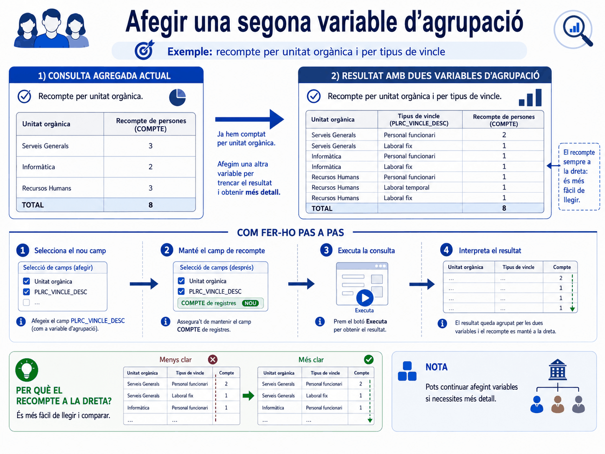
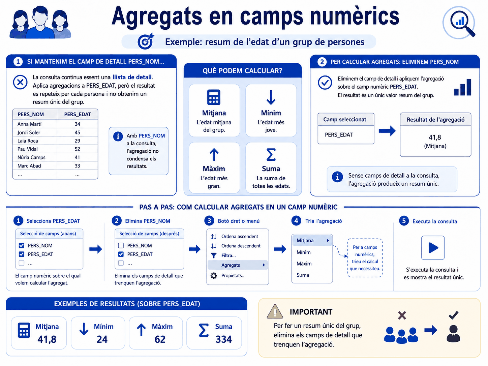
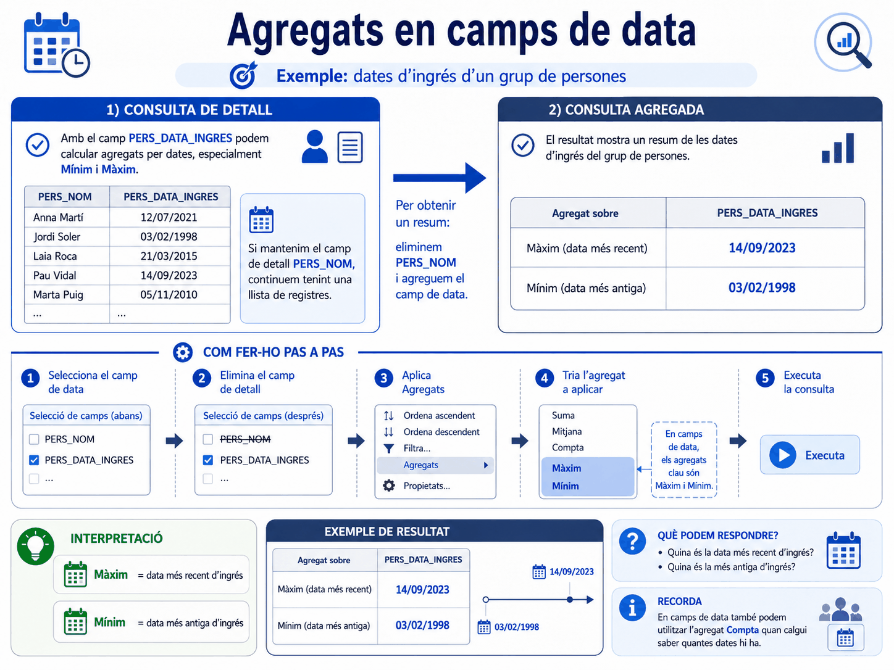

Apartat 1Detall contra resum
Per defecte, les consultes de Click & Decide són de detall: cada registre que compleix els criteris apareix individualitzat en una fila.
Consulta de detall
Serveix per treballar amb els casos un per un.
Consulta agrupada
Serveix per veure la forma del conjunt.
El pas d'una cosa a l'altra es fa amb els agregats, i no canvia els criteris: la població és la mateixa, el que canvia és com es presenta.
Apartat 2Fer un recompte
Partim d'una consulta que mostra la unitat orgànica i el nom de la persona, i volem saber quanta gent hi ha a cada unitat. Hi ha dos camins:
Pel menú
Consulta → Insereix → Agregats → Compte
Pel botó dret
Clic dret sobre la capçalera del camp que voleu comptar → Agregats → Compte. És el camí ràpid.
L'ideal és que el camp que feu servir com a comptador sigui un identificador únic de cada registre: el NIF, el codi de lloc. Comptar un camp que es pot repetir o quedar buit dóna xifres que costen d'explicar.

Hi ha dos camins i porten al mateix lloc. Pel menú: Consulta > Insereix > Agregats. O bé, més curt, posant-vos a sobre del camp que voleu agregar i prement el botó dret → Agregats. El segon és el que fareu sempre un cop us hi acostumeu.
El menú del botó dret no porta només els agregats. Hi trobareu, per aquest ordre: Criteri..., Ordena, Selecciona, Agrupa, Agregats, Distinct Agregats, Compte(*) i Propietats. És el camí curt per a gairebé tot el que es fa amb un camp, i val la pena obrir-lo un cop per veure'l sencer.
Apartat 3Què fa el programa
En aplicar l'agregat passen dues coses alhora, i convé saber-les perquè si no sembla que el programa s'hagi menjat el camp:
-
Desselecciona el camp original
El camp que heu comptat, per exemple el nom de la persona, deixa d'estar seleccionat per veure. Té sentit: si agrupem, els noms individuals ja no hi caben.
-
Crea un camp nou al final
Apareix una columna nova, al final de la taula, que conté el recompte.
En executar, el programa agrupa per les columnes restants i mostra el total a la columna del recompte. Aquesta frase és la clau de tota la unitat: s'agrupa per tot el que queda seleccionat.
Poseu sempre la columna del recompte a la dreta de tot. Es llegeix molt millor: primer les categories, després el número. Es fa arrossegant el camp a la graella inferior, com vam veure a la unitat 4.
Fixeu-vos en què passa a la graella quan hi apliqueu l'agregat: el camp desapareix de la llista de camps triats i, al seu lloc, se n'afegeix un de nou al final, el del recompte. No és que s'hagi perdut: és que aquell camp ja no es mostra, ara es compta. Si després hi afegiu una altra variable, deixeu sempre el recompte a la dreta, que és com s'entén el resultat d'un cop d'ull.

Count_PERS_NOM: el nom de l'agregat i el del camp que
s'ha comptat.
Videotutorial 10 de l'EAPC, minut 1:55.
Apartat 4Els tres comptadors
Aquest apartat és el més important de la unitat i el que més sovint es passa per alt. Click & Decide no té un comptador: en té tres, i responen preguntes diferents.
Els tres estan al mateix menú del botó dret, un a sota de l'altre, i és molt fàcil agafar-ne un per un altre:
| Al menú | Què compta | Pregunta que respon |
|---|---|---|
| Agregats → Compte | Quants registres hi ha per a cada variable d'un camp. | Quantes files hi ha de cada categoria. |
| Distinct Agregats → Compte | Quantes variables diferents hi ha en un camp. | Quants valors distints hi ha. |
| Compte(*) | Comptador de registres, sense submenú. | Quantes files hi ha en total. |

Al menú del botó dret, Agregats i Distinct Agregats són dues línies consecutives que despleguen submenús gairebé idèntics, i just a sota hi ha Compte(*). Trieu-lo amb calma: la diferència entre el primer i el segon és la diferència entre 73 i 48.
El cas que ho aclareix tot
Torneu a la consulta model 4 de la unitat 00, sobre INCIDÈNCIA, que és de registres múltiples. Una persona amb tres baixes hi surt tres vegades.
Compte de registres
73 incidències
Correcte si us han preguntat quants processos hi ha hagut.
Compte de valors distints
48 persones
Correcte si us han preguntat quanta gent hi ha hagut.
En una taula de registre únic com PERSONA, els tres comptadors sobre el NIF donen pràcticament el mateix, i per això molta gent no descobreix mai que són diferents. El dia que apliquen el mateix reflex a una taula de registres múltiples, la xifra queda inflada i res no avisa.
Apartat 5Afegir una segona variable
Com que el programa agrupa per tot el que queda seleccionat, afegir una columna més desglossa el recompte automàticament.
Una variable
Dues variables
Afegint el tipus de vincle es veu quants funcionaris i quants interins hi ha a cada unitat. La suma per unitat continua sent la mateixa; el que canvia és el nivell de detall.

Si afegiu més camps i torneu a executar, el resultat canvia adaptant-se a la nova informació. Cal anar amb compte de no afegir camps que no interessin per al càlcul, perquè poden distorsionar el resultat final.
L'exemple del vídeo agrupa per UBIC_UN_ORGAN_CODI, el
codi de la unitat orgànica, i hi afegeix
PLRC_VINCLE_DESC com a segona variable: així, en comptes
de quanta gent hi ha a cada unitat, s'obté quanta n'hi ha
de cada vincle dins de cada unitat. Cada camp que hi afegiu
parteix més els grups, i el recompte es reparteix.
Apartat 6La regla dels camps de detall
És la conseqüència directa de l'apartat anterior, i és el motiu número u pel qual una agrupació "no funciona".
Perquè l'agrupació resumeixi de veritat, cal treure de la consulta qualsevol camp de detall únic, com el nom o el NIF de la persona. Si el deixeu, el programa no pot agrupar, perquè cada persona és diferent i cada grup té una sola fila.
Amb el nom seleccionat
Sense el nom
Si veieu una columna de recompte plena d'uns, ja sabeu què passa: hi ha un camp de detall a la consulta.
Apartat 7Agregats sobre números
Sobre un camp numèric, com l'edat, les opcions s'amplien: ja no només es pot comptar, sinó fer operacions matemàtiques.
| Agregat | Resultat | Exemple d'ús |
|---|---|---|
| Mínim | El valor més petit. | La persona més jove del grup. |
| Màxim | El valor més gran. | La persona de més edat del grup. |
| Suma | La suma de tots els valors. | Té sentit en imports; sumar edats no en té cap. |
| Mitjana | La mitjana del grup. | Edat mitjana per unitat orgànica. |
| Desviació estàndard | La dispersió de la mostra. | Com de repartides estan les edats. |
| Desviació estàndard de la població | El mateix, calculat sobre la població sencera. | Si el grup és tota la població, no una mostra. |
| Variança | El quadrat de la desviació. | Estadística. |
| Variança de la població | El mateix, sobre la població sencera. | Estadística. |
| Compte | Quants valors hi ha. | Quantes persones tenen l'edat informada. |
Desviació estàndard i variança apareixen cadascuna dues vegades, en versió de mostra i de població. La distinció importa si feu estadística de veritat; per a la feina habitual d'explotació de dades, amb mínim, màxim, mitjana i compte en teniu prou.

També aquí cal treure els camps de detall. Si deixeu el nom de la persona, la "mitjana" de cada grup serà l'edat d'aquella persona, cosa que és certa i completament inútil.
Aquí hi ha un pas que costa d'acceptar la primera vegada: per obtenir la mitjana d'edat d'un grup, cal esborrar el camp del nom. Mentre el nom hi sigui, cada persona forma el seu propi grup i la mitjana de cadascú és la seva pròpia edat. L'agregació només té sentit sobre el que queda després de treure el que és únic de cada fila.
Apartat 8Agregats sobre dates
Els camps de data també admeten agregats, amb un sentit cronològic que els fa molt útils:
| Agregat | Resultat | Exemple d'ús |
|---|---|---|
| Mínim | La data més antiga. | Qui fa més temps que hi és. |
| Màxim | La data més recent. | La darrera incorporació que hi ha hagut al departament. |
| Compte | Quantes dates hi ha informades. | Quants registres tenen la data plena. |

Compte sobre un camp de data serveix per mesurar la qualitat de les dades. Si una unitat té 40 persones i només 31 tenen la data informada, teniu nou registres incomplets i ho sabeu abans que us ho digui ningú.
El cas del vídeo és clar: amb PERS_DATA_INGRES, el
màxim és la data d'ingrés més recent del grup, és a dir,
l'última persona que hi ha entrat, i el mínim és la primera. Sobre una
data el menú només ofereix compte, mínim i màxim: sumar dates o
fer-ne la mitjana no vol dir res, i per això no hi són.
Apartat 9Errors freqüents
El que passa
La columna de recompte està plena d'uns.
El total no quadra amb el nombre de persones.
He afegit una columna i han sortit més files.
Ha desaparegut el camp que volia comptar.
El que passa de veritat
Hi ha un camp de detall seleccionat. Traieu-lo.
Esteu comptant registres en una taula de registres múltiples. Us cal el comptador de valors distints.
Normal: s'agrupa per tot el que està seleccionat. Cada columna nova parteix els grups.
El programa el desselecciona en crear l'agregat. La columna nova és al final.
Apartat 10Exercicis
Persones per unitat
ReprodueixSobre PERSONA, filtrant el personal en actiu, obteniu quantes persones hi ha a cada unitat orgànica. Poseu la columna del recompte a la dreta de tot.
Pista
Seleccioneu la unitat orgànica i el NIF. Clic dret sobre el NIF, Agregats, Compte. I no deixeu cap camp de detall com el nom.
Comprovació
La suma de la columna de recompte ha de donar exactament el nombre de persones actives que vau obtenir a l'exercici EX-07-1.
152 repartides entre les unitats
Aquesta comprovació és la millor manera de validar qualsevol agrupació: el total agregat ha de coincidir amb el detall.
73 no són 48
TrencaSobre INCIDÈNCIA, amb el filtre de les incidències vigents al setembre, feu-ho de dues maneres:
- Un recompte de registres.
- Un recompte de valors distints del NIF.
Anoteu les dues xifres i penseu quina donaríeu a la pregunta "quanta gent ha estat de baixa aquest setembre".
Comprovació
73 registres enfront de 48 persones
És la consulta model 4 de la unitat 00, i ara ja sabeu exactament quin botó produeix cada número. La resposta professional segueix sent la mateixa: 48 persones en 73 incidències.
Proveu també de comptar el NIF amb l'agregat normal en comptes del distint: veureu que torna 73, perquè compta files, no persones.
Retrat d'una unitat
ResolUs demanen un quadre resum del personal en actiu amb, per a cada unitat orgànica:
- quanta gent hi ha,
- l'edat mitjana,
- la data d'incorporació més recent.
Quins camps seleccioneu i quins agregats hi apliqueu?
Solució
El que no hi ha de ser: ni el nom ni cap altre camp de detall. Amb el nom seleccionat obtindríeu 152 files amb el recompte a 1, l'edat de cada persona com a "mitjana" i la seva pròpia data com a "màxim".
Sobre la data: màxim vol dir la més recent, que és el que us han demanat. Si volguessin l'antiguitat de la unitat, seria mínim.
Apartat 11Llista de comprovació
- Explicar la diferència entre una consulta de detall i una d'agrupada.
- Crear un recompte pels dos camins, menú i botó dret.
- Saber què fa el programa amb el camp original i on apareix el nou.
- Enunciar els tres comptadors i què compta cadascun.
- Dir quin comptador cal per saber quanta gent hi ha en una taula de registres múltiples.
- Explicar per què s'agrupa per tot el que queda seleccionat.
- Reconèixer una columna de recompte plena d'uns i saber per què passa.
- Aplicar mitjana, mínim, màxim i suma sobre camps numèrics.
- Aplicar mínim i màxim sobre dates sabent què vol dir cadascun.
- Validar una agrupació comprovant que el total quadra amb el detall.
Hi ha una altra manera d'eliminar repeticions que no és agrupar: la propietat Registres únics. És curta, i és l'eina que hem promès dues vegades per descobrir quins codis existeixen en un camp.